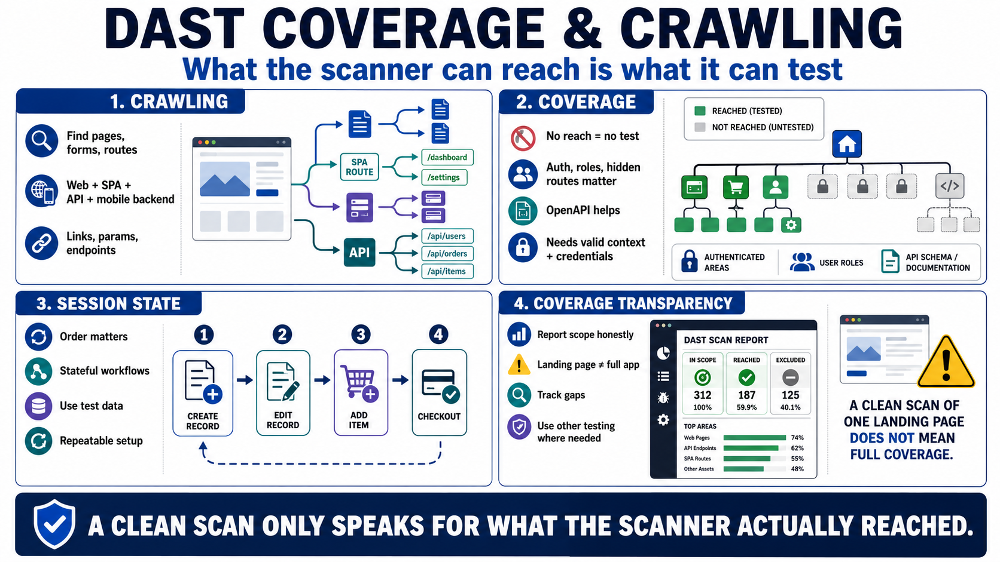

Crawling, Discovery, and Application Coverage
Connecting to LMS... Progress: in progress

Narration
Crawling is the process of discovering reachable pages, endpoints, routes, forms, links, parameters, and API surfaces. Traditional web pages may be discovered through links and forms. Single-page applications may require browser execution and client-side route awareness. APIs may require documentation, schemas, collections, or example requests. Mobile backends may expose routes that are not obvious from a desktop browser.
Coverage determines what DAST can evaluate. If the scanner cannot reach an endpoint, authenticate into a workflow, discover a route, or understand a request format, it cannot reliably test that area. Authenticated pages, role-specific functionality, hidden routes, tenant-specific views, and stateful workflows often require additional setup. OpenAPI or API descriptions at a high level can help scanners understand API shape, but they still need valid context and credentials.
Session state affects discovery. Some workflows require creating a record before editing it, adding an item before checking out, or moving through a sequence before a later endpoint becomes meaningful. A scanner that sends requests out of order may miss important behavior or produce noisy findings. Test data and repeatable setup steps help DAST cover realistic paths without damaging production data.
Coverage gaps should be reported honestly. A clean scan of the public landing page does not mean the authenticated application is safe. A scan that excludes administrative features cannot speak for administrative risk. Strong DAST programs track what was in scope, what was reached, what was excluded, and which areas require other testing methods. Coverage transparency keeps results useful and defensible.